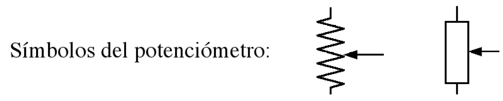
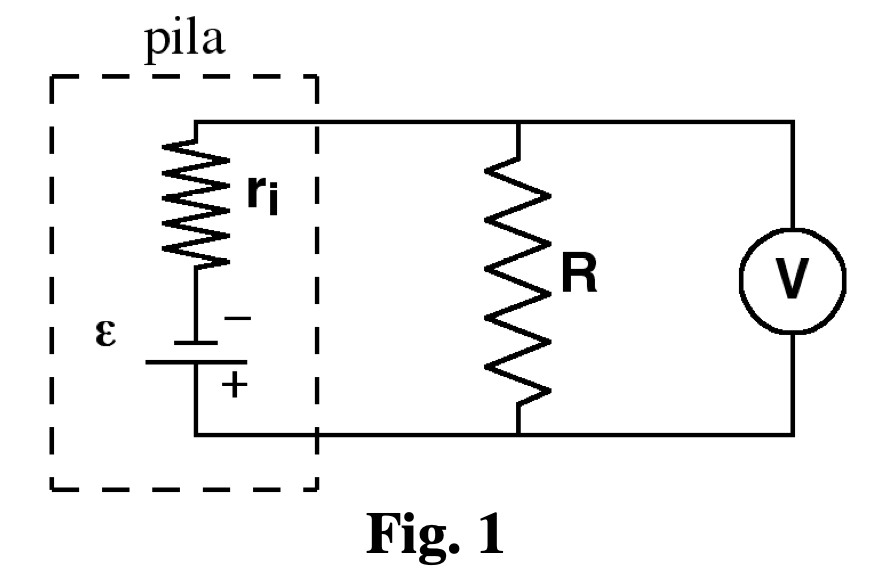
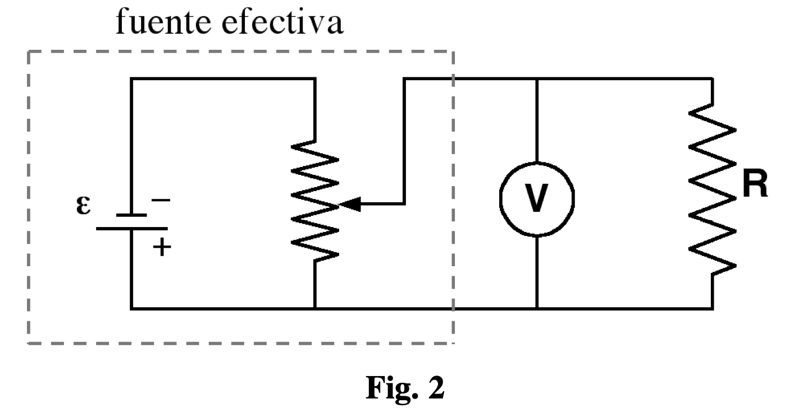

Prácticas de Laboratorio — UNED
2024-10-26
Instrumentos y métodos de medida en circuitos de corriente continua; determinación de la fuerza electromotriz y de la resistencia interna de una fuente a partir de la tensión en bornes frente a la intensidad.
El objeto más importante de esta práctica es, por un lado, familiarizarse con los instrumentos y métodos de medida en circuitos de corriente continua y, por otro lado, asimilar las características y propiedades de este tipo de circuitos.
Las fuentes de corriente continua reales son equivalentes a una fuerza electromotriz (f.e.m.) y una resistencia conectada en serie, que se denomina resistencia interna. Por otro lado, los instrumentos de medida como un voltímetro o un amperímetro requieren que una cierta corriente fluya a través de ellos, poseen también una resistencia interna y se convierten, por tanto, en parte del circuito sobre el que se están realizando las medidas.
El voltímetro tiene una gran resistencia interna, del orden de los M\Omega, mientras que la resistencia interna de un amperímetro es siempre muy pequeña, del orden de \sim 1\Omega, al menos en los utilizados en este laboratorio. En la mayoría de los casos, la perturbación que provoca la colocación de estos elementos de medida en el circuito en el que se desea medir puede despreciarse. Lo que es equivalente a suponer que la resistencia del voltímetro es infinita y la resistencia del amperímetro es prácticamente nula, siempre comparadas con los valores de las resistencias en el circuito. Evidentemente, esa suposición empezará a fallar, como se verá en la práctica siguiente práctica de electricidad, cuando en el circuito existan resistencias de valores muy grandes, del orden del M\Omega; o bien muy pequeña, del orden del \Omega, o en ambos casos.
Para medir un voltaje entre dos puntos de un circuito, el voltímetro se debe colocar en paralelo entre los puntos cuya diferencia de potencial se desea medir. Además, habrá que tener en cuenta que dos puntos del circuito que no estén separados por resistencias, condensadores o bobinas, tienen el mismo potencial.
Por el contrario, si se desea medir la intensidad de corriente que circula por un punto de un circuito, el amperímetro debe colocarse en serie en ese punto. Un amperímetro nunca debe colocarse en paralelo en un circuito: al tener una resistencia tan pequeña basta una pequeña diferencia de potencial entre los bornes del amperímetro para producir a través de él una intensidad de corriente muy grande, que lo estropeará.
En el laboratorio se utilizarán como voltímetro, amperímetro y ohmímetro (medidor de resistencias), los llamados multímetros que realizan cualquiera de esas funciones dependiendo de la posición de un conmutador en el aparato. Por otro lado, el potenciómetro es una resistencia cuyo valor se puede variar de forma continua. En los circuitos eléctricos se representan los potenciómetros mediante los siguientes símbolos:

Realizar las medidas y observaciones que se indican a continuación, registrando por escrito los resultados y conclusiones obtenidos, para su posterior descripción y comentario en el informe de la práctica. En el informe final se detallarán los resultados obtenidos en las diferentes medidas realizadas, discutiendo e interpretando sus causas.
1
Seleccionar tres resistencias del mismo orden de magnitud (unas decenas de K\Omega).
Usar el multímetro para medir las resistencias de cada una de ellas por separado.
Medir a continuación la resistencia del conjunto formado por las tres conectadas en: 1. serie 2. paralelo
Comparar los valores obtenidos para la asociación en serie y en paralelo de las tres resistencias con los valores calculados teóricamente a partir de los valores medidos para cada una de las resistencias individuales.
2
Vamos a examinar las características de una pila seca conectando el voltímetro a sus bornes.

Hacer lo mismo con una resistencia de unos 100 \Omega.
Mantener el circuito conectado únicamente el tiempo imprescindible para leer el voltímetro (el valor tardará unos segundos en llegar a ser relativamente estable).
Hacer lo mismo con una resistencia de 50 \Omega.
Describir las diferencias observadas.
El esquema del circuito que se debe construir para las medidas anteriores está representado en la Fig. 1. Explicar por qué cambia el voltaje medido, V, al variar la resistencia R.
A partir de los valores medidos de V con las diferentes resistencias, R, y los valores experimentales de éstas, medidas con el multímetro, deducir la resistencia interna de la pila, r_{i}, y su f.e.m., \epsilon; y sus respectivos errores, \Delta r_{i} y \Delta \epsilon).
IMPORTANTE:
Las resistencias soportan en régimen estacionario únicamente corrientes por debajo de un límite máximo determinado por su capacidad de calentamiento sin llegar a deteriorarse. Este límite viene fijado por la potencia máxima (RI^{2}) que pueden disipar y que, en general, en las resistencias del laboratorio es de 2 a 0.25 vatios. Por ello, antes de efectuar ninguna medida, se debe hacer un cálculo aproximado de la corriente que va a pasar a través de cada resistencia utilizada y comprobar que la potencia correspondiente no vaya a sobrepasar el límite mencionado. En la experiencia planteada arriba el circuito sólo debe mantenerse cerrado unos instantes si la potencia fuera demasiado alta.
3
Otra forma de obtener un valor de la f.e.m. de la pila es medir directamente el voltaje entre sus bornes. De esta manera, el valor obtenido es un valor aproximado, que es mejor cuanto menor es el valor de la resistencia interna de la pila comparada con la resistencia interna del voltímetro.
4
El segundo tipo de fuente es un generador de corriente continua junto con un potenciómetro.
1. Conectar primeramente el generador directamente al voltímetro, y observar la tensión entre bornes de esta fuente y su variación al mover el regulador.
Fijar el regulador de forma que el voltaje de salida sea máximo.
Conectar el potenciómetro con el generador como se indica en la figura 2 (sin conectar ninguna resistencia de carga R).
Al conectar el potenciómetro al generador, obtenemos lo que vamos a llamar fuente efectiva (generador + potenciómetro).
Examinar las características de la fuente efectiva resultante, conectando el voltímetro entre las terminales y variando el control del potenciómetro de un extremo a otro. Se trata de ver cómo al cambiar el control del potenciómetro, cambia el voltaje medido por el voltímetro.
Explicar las variaciones observadas.
2. Fijar ahora el potenciómetro en una posición intermedia, y anotar el valor de voltaje que se obtiene, que es el valor aproximado de la f.e.m. de la fuente efectiva.
Sin mover la posición del potenciómetro, conectar (en paralelo al voltímetro) sucesivamente las mismas resistencias que en el apartado 2), tal como se indica en la figura 2, observando los cambios en la lectura del voltímetro.
Describir e interpretar lo observado.
Con los valores de V medidos para cada resistencia R, determinar la resistencia interna y la f.e.m. de la fuente efectiva formada por el conjunto generador + potenciómetro. Para ello, tener en cuenta que la fuente efectiva de la figura 2, puede sustituirse por una f.e.m. en serie con una resistencia interna, por lo que el circuito de la fig.2 quedaría como el de la fig.1.
Comparar el valor de \epsilon obtenido con el valor de obtenido en el apartado anterior.
¿Dependerá la resistencia interna de la posición del regulador del potenciómetro?
Justificar la respuesta.

5
Resumir, interpretar y comparar las características observadas en los dos tipos de fuentes estudiadas.
Ejercicios previos
Para el circuito de la figura 1, obtener la relación que existe entre V (voltaje medido por el voltímetro), R, r_{i} y \epsilon.
Para ello, considerar que la intensidad que se desvía por el voltímetro es despreciable, por lo que V=IR, donde I es la intensidad que circula por el circuito.